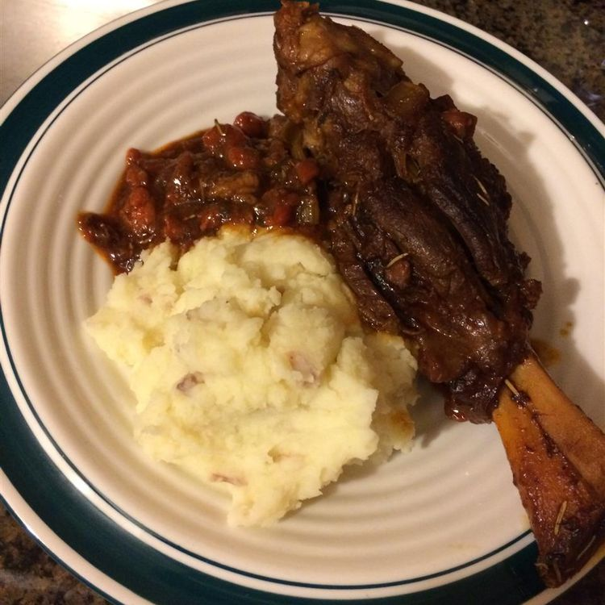

Stout-Braised Lamb Shanks

Description
This hearty Irish lamb shank stew is perfect if you feel like having something a little different on St. Patrick's Day
Pairing the lamb with a bottle of Guinness Stout and cooking it low and slow will leave you with fall off the bone tender lamb shanks. Whether you're looking for a comforting meal on a rainy day or something big to impress on Sunday night dinner this recipe is sure to meet your needs.
Ingredients
- 1 tablespoon vegetable oil
- 4 lamb shanks
- 1 onion, chopped
- 4 cloves garlic, chopped
- 2 carrots, chopped
- 2 celery ribs, chopped
- 2 tablespoons tomato paste
- 1 (14 ounce) can beef broth
- 1 (12 fluid ounce) bottle stout (such as Guinness) or porter
- 3 sprigs fresh thyme
- 3 sprigs fresh parsley
- 1 bay leaf
- 1 sprig fresh rosemary
- salt and pepper to taste
Steps
- Heat oil in a Dutch oven or large, wide pot over medium-high heat until oil begins to smoke. Sear lamb shanks in hot oil on all sides until browned, about 10 minutes. Remove lamb shanks and set aside. Drain excess grease
- Add onion and garlic to the Dutch oven over medium heat. Cook and stir until onion is softened and translucent, about 5 minutes. Stir in carrots, celery, and tomato paste; cook for 5 minutes more.
- Return lamb shanks to the Dutch oven and pour in broth and stout beer. Use kitchen twine to tie together thyme, parsley, and bay leaf into a secure bundle; add to lamb shanks. Bring to a boil.
- Reduce heat to medium-low, cover, and simmer, stirring occasionally, until lamb is tender and nearly falls off the bone, 2 to 3 hours. Stir in rosemary sprig and season with salt and pepper during the last 10 minutes of cooking. Remove rosemary sprig and herb bundle before serving.
Tips
You can add water in step 4 to keep the cooking liquid from becoming too thick. The cooking liquid should reduce into a nice sauce when lamb shanks are done.